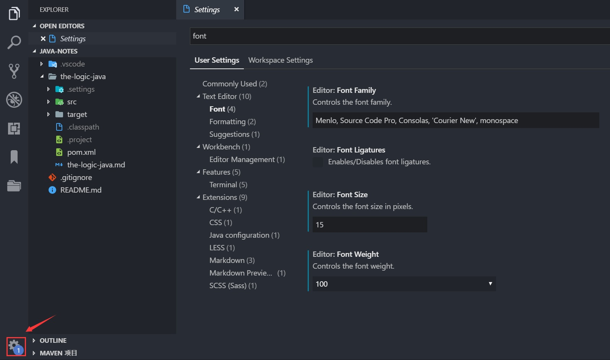
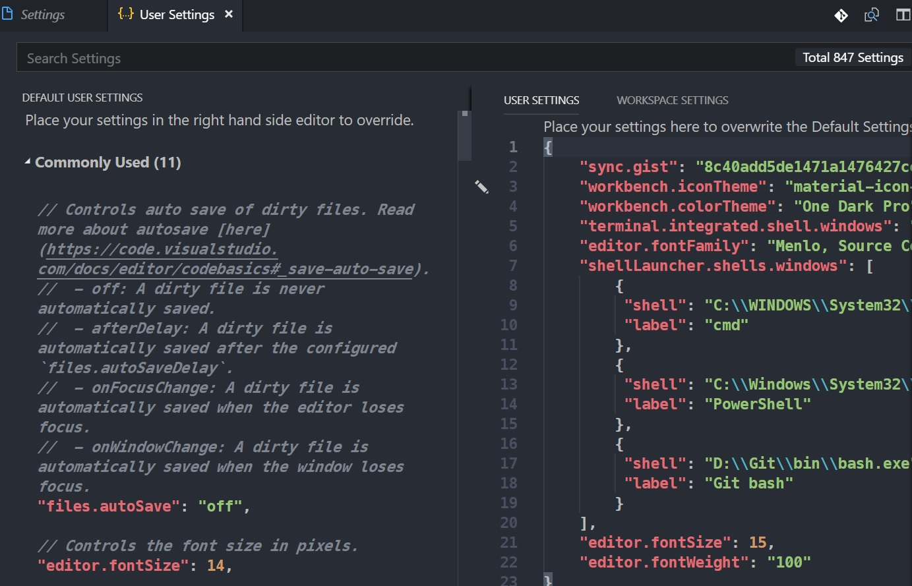
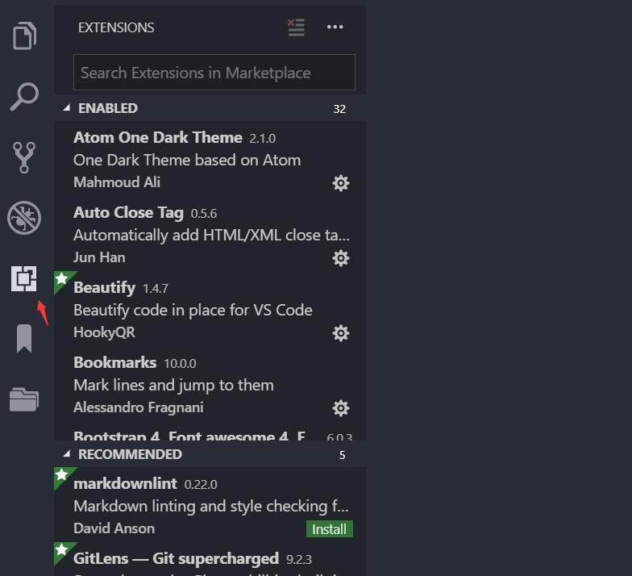
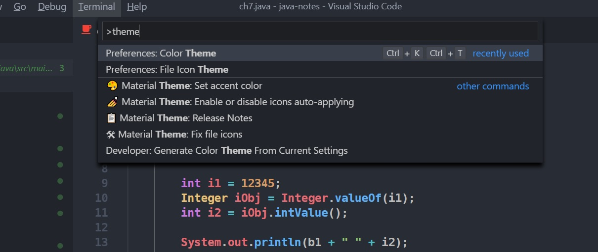
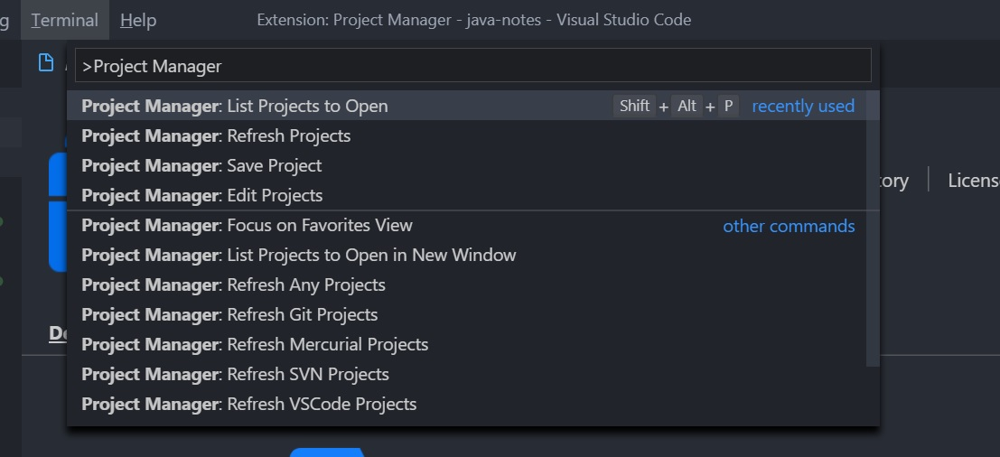
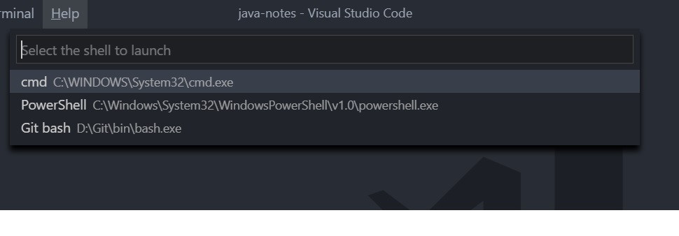

之前一直使用sublime text作为编辑器，但是用上了vscode后，发现其是真心好用，主要相比sublime配置简单，插件丰富，自身就内置了很多的功能，如非常友好的前端开发环境以及python等。下面主要记录一下vscode的一些简单配置和相关的开发插件。
基本配置
vscode也是使用json配置文件的方式，但是其提供了可视化的操作界面，非常适合小白入门，点击左下方的设置按钮，选择Settings，用户可以搜索相关的配置项进行更改，如配置vscode编辑器字体：

同时也可以打开配置文件查看和修改：

点击扩展按钮，可以看到已安装的插件和推荐的插件

主题插件
快捷键Ctrl+Shift+p打开控制面板，输入theme，选择Preference：color theme，即可浏览已安装主题。

我主要安装的主题插件有：
1.Atom One Dark Theme
2.Material Theme
3.One Dark Pro
另外还有两款图标主题：
1.vscode-icons
2.Material Icon Theme
前端开发插件
1.Auto Close Tag
2.Bootstrap 4, Font awesome 4
3.HTML CSS Support
4.HTML Snippets
Python
Ctr+Shift+p打开面板后输入python可以选择python的解释器，包括虚拟环境的
1.Python:Linting, Debugging
2.Jupyter：可以实现Jupyter notebook的功能
Java
Java Extension Pack
Markdown
1.Markdown All in One
2.Markdown Preview Enhanced
3.Markdown Preview Github Styling
其他
1.Beautify
2.Bookmarks
3.Git History: Git提交历史信息
4.open in browser
5.Path Intellisense: 路径提示和补全
6.Project Manager: 将当前目录作为一个项目，管理多个项目

7.Settings Sync: 多个设备上同步vscode配置和插件
8.Shell launcher：配置多个终端
Ctrl+Shift+t进行选择

9.Terminal
最后：学会用好vscode命令面板：Ctrl+Shift+p打开面板后，输入插件名称查看相应功能。